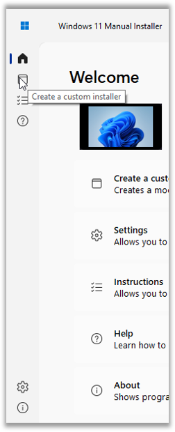

Edición de documentación de ayuda: 2022/07/31 (v2.0.0100)
Versión 2.0.0100
Este software utiliza 7-Zip. Copyright © Igor Pavlov. Este software utiliza OSCDIMG. Copyright © 1993, 2012 Microsoft Corporation. Este software utiliza DISM. Copyright © Microsoft Corporation. Cada componente está protegido por sus términos de licencia.
Esta documentación le ayudará a comenzar con el Instalador manual de Windows 11
La interfaz principal recibió un lavado de cara en la versión 2.0. Cuando el programa se inicia, será bienvenido por el menú principal, que ahora muestra el nombre y el modelo del equipo, el tiempo de creación del último instalador, el historial de instaladores, y la posibilidad de continuar la creación del instalador.

Para navegar por las opciones (referidas como "Paneles), las imágenes del panel lateral deben ser utilizadas. En la imagen mostrada arriba, puede ver una descripción de cada imagen. También puede poner el cursor sobre ellas para ver una descripción, tal y como se muestra abajo:
La creación del instalador es la premisa del programa (y la primera opción que verá en el menú principal). También ha tenido un lavado de cara desde la versión 1.0. En esta pantalla, debe especificar una imagen ISO de Windows 11 y otra de Windows 10. Después, debe especificar el nombre y la ruta del instalador de destino.

La versión 2.0 le permite escanear un directorio por archivos ISO, y también le permite descargar imágenes de instalación de Windows de la página web de Microsoft (y también compilarlas mediante archivos descargados de UUP Dump (uupdump.net), si los privilegios administrativos están presentes)
|
|
|
Haciendo clic en "Más opciones..." irá a las opciones de funcionalidad, las cuales son mencionadas más adelante en la documentación. Después de especificar los instaladores de origen y las opciones del instalador de destino, haga clic en "Crear". El programa le hará confirmar sus opciones.
Si confirma, la creación del instalador comenzará. En la versión 2.0, la pantalla del proceso de creación del instalador ya no está en una ventana separada, y ahora está en la ventana principal; pero el proceso es el mismo.

Uno de los cambios en la versión 2.0 es la posibilidad de mostrar u ocultar el registro de creación del instalador, y el programa ya no se congela cuando se esté creando el instalador. También mostrará información más detallada al acabar.

Ahora hay un acceso directo para abrir el archivo de registro, y puede salir del programa haciendo clic en "Aceptar"
El programa cumple con la filosofía: "Simple por defecto, pero potente cuando se necesita", permitiéndole configurarlo de la manera que quiere. A diferencia de la versión 1.0, las configuraciones en esta versión están en secciones diferentes.
Las opciones de personalización consisten en:
 |
Las opciones de funcionalidad consisten en:
También puede acceder a estas opciones haciendo clic en "Más opciones..." en la pantalla de creación del instalador

Esta pantalla muestra instrucciones para crear un instalador modificado de Windows 11 por sí mismo, intentando ser lo más útil posible.
Esta pantalla muestra la documentación de ayuda (lo que está leyendo ahora)

Muestra la información del programa, como las versiones de producto y ensamblado, los créditos, las versiones de los componentes, y dónde puede ser encontrado el código fuente

El panel de opciones avanzadas le permite establecer opciones adicionales para el método de creación REGTWEAK. Puede ser útil si desea omitir el inicio de sesión forzado con una cuenta Microsoft en Windows 11 Pro, pero esto es opcional, y SOLO es visible si el programa cuenta con privilegios de administrador.

El historial de instaladores le permite ver sus instaladores creados recientemente, al igual que exportarlos a un archivo XML, HTML o CSV.

La versión 2.0 le permite descargar archivos de Windows 11 y Windows 10 desde la página web de Microsoft. Si están presentes los privilegios de administrador, el programa también le deja compilar las imágenes con archivos descargados desde UUP Dump (uupdump.net)